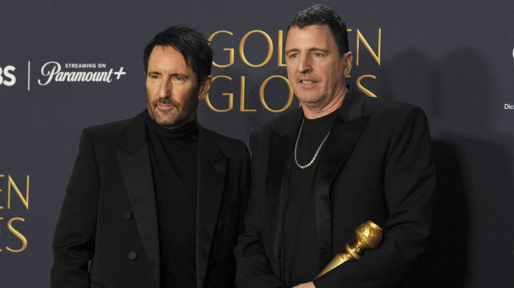

5 Music Legends Who Went From Rock Gods To Hollywood Heavyweights
{kind=link}

Over the weekend, it was confirmed that we’ll see a sequel next year to The Social Network. Immediately, our thoughts turned to the original film’s incredible soundtrack and whether we’d see a return by its composers, Nine Inch Nails frontmen Trent Reznor and Atticus Ross. Their soundtrack both won them an Oscar and launched their enduring Hollywood careers.
The mediums of music and cinema remain forever intertwined. Both Danny Elfman and Hans Zimmer played in bands prior to composing cinematic scores, while icons like David Bowie and Prince both frequently acted and contributed original hit songs to soundtracks. However, there is a smaller cluster of artists who’ve confidently stepped up to score entire soundtracks.
Whether it is the legendary classic rockers who composed operatic film scores, contemporary music icons who pivoted to new creative opportunities in film, or the EDM trailblazers who crafted compelling electronic soundscapes for mesmerizing digital worlds—these are our favorite examples of music icons who took on Hollywood, and won.
Queen: Flash Gordon (1980)
Rock' n’ roll and cinema have always had a fascinating relationship, whether it’s Elvis Presley and his parallel career in film (starring in over 30 films) or the extravagant concept albums from Pink Floyd and The Who that were transformed into accompanying films. Queen took this a step further in 1980 when they scored the soundtrack to the campy cult classic Flash Gordon.
Flash Gordon might have landed initially to a mixed response and underwhelming box office, but it was quickly embraced as a cult classic, and the grandiose soundtrack from Queen is surely one of the biggest reasons why. Brimming with epic guitar riffs and heavy on sci-fi synths, the soundtrack saw Queen embracing the format in a way that a rock band never had before.
Freddie Mercury and Brian May confirmed they were gifted creative license to approach the project however they wished, and as such, were determined to do something special. While the lead single, “Flash,” featured Queen’s unmistakable vocals, the album overall is a more ambitious affair that fuses the band’s trademark operatic rock with forward-thinking electronica.
Trent Reznor & Atticus Ross: The Social Network (2010)
Trent Reznor had already led Nine Inch Nails for more than 20 years when acclaimed director David Fincher inquired about a possible collaboration, though initially Reznor was skeptical. He approached collaborator Atticus Ross to explore some ideas, and an early draft of “Hand Covers Bruise” was sent to Fincher—it was immediately adopted as the film’s de facto score.
Fincher knew The Social Network needed a fittingly sinister soundtrack to fulfill his dark vision. Without the quiet menace that Reznor and Ross’s soundtrack brought to the proceedings, the script from Allan Sorkin took on the form of a more traditional comedy. The sense of unease channeled in the eventual soundtrack proved so effective that it won an Oscar for Best Original Score.
Reznor spoke of his work on The Social Network as among the most fulfilling in his career, reuniting with Ross to score more than a dozen films together, including multiple films for Fincher, Pixar’s Soul in 2020, for which they won another Academy Award, and more recently, the pulse-pounding score for Challengers, and the upcoming TRON: Ares.
Daft Punk: TRON Legacy (2010)
Daft Punk only completed one full original score, but it was indeed a special one. The seminal French house trio (now sadly defunct) delivered an electro masterpiece with their score for TRON: Legacy, an EDM milestone and one of the standout film scores from the past 20 years.
TRON: Legacy director Joe Kosinski had been in touch with Daft Punk as far back as 2007, and the enigmatic duo spent over two years crafting the soundtrack, working closely with orchestrator Joseph Trapanese, who helped oversee its recording with a 100-piece orchestra. It was an acclaimed fusion of synths and strings, forming a big part of the Daft Punk legacy.
Radiohead’s Jonny Greenwood: There Will Be Blood (2007)
Fans of Radiohead are often forced to endure punishingly long waits between albums and tours. However, observant fans have also indulged in the intermittent soundtrack work of guitarist and keyboardist Jonny Greenwood, most notably There Will Be Blood in 2007, which marked the start of an ongoing cinematic partnership with director Paul Thomas Anderson.
Greenwood evoked a brooding, haunting soundscape for There Will Be Blood, a fittingly discordant soundscape to match Anderson’s pitch-black tale of capitalist greed and deception. It was successful enough that he returned to work with Anderson on several of his subsequent films, including his latest flick, One Battle After Another, which landed in cinemas last weekend.
Mark Ronson: Barbie (2023)
Mark Ronson struck cinematic gold when he worked with writer/director Greta Gerwig to write and compose the soundtrack for Barbie (alongside fellow executive producer Andrew Wyatt). Helping write “I’m Just Ken,” sung by Ryan Gosling, Gerwig was so impressed with the initial musical sketches that she decided to expand their role to cover the entire film.
Ronson and Wyatt’s soundtrack for Barbie garnered the duo Academy Award, Grammy, and Golden Globe nominations, and last month it was revealed they will collaborate with Gerwig once again to score her lauded Chronicles of Narnia adaptation on Netflix, with the long-discussed C.S. Lewis adaptation set to open in IMAX on Thanksgiving Day 2026.